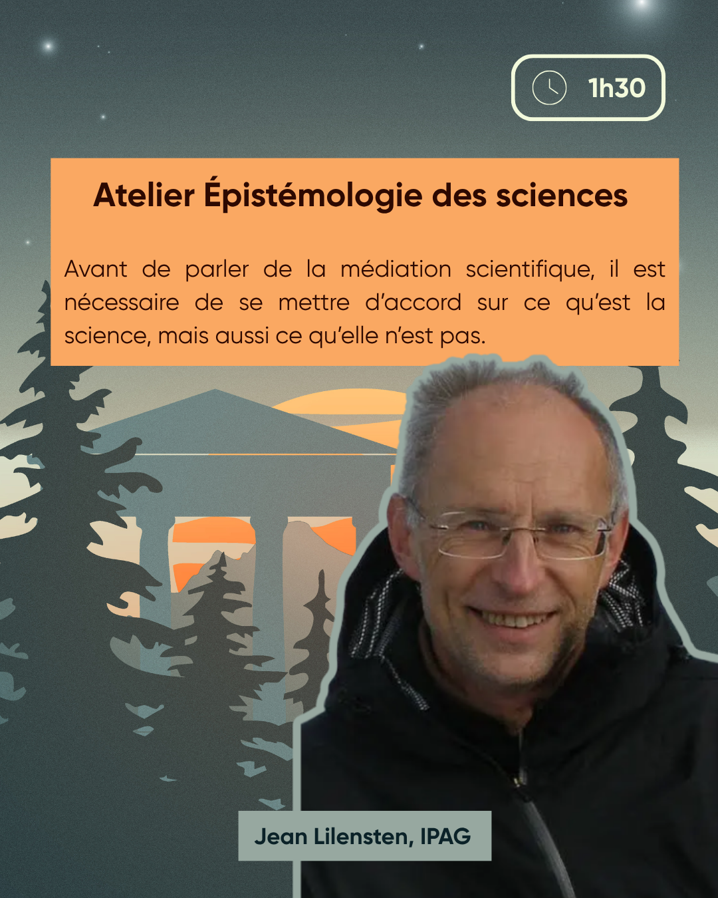

Résumé
Avant de parler de la médiation scientifique, il est nécessaire de se mettre d'accord sur ce qu'est la science, mais aussi ce qu'elle n'est pas.
intervenant·es
Jean Lilensten est un astronome et planétologue français travaillant à l'Institut de planétologie et d'astrophysique de Grenoble (IPAG). Il est spécialiste de l'activité solaire et de son impact sur les planètes du système solaire.
